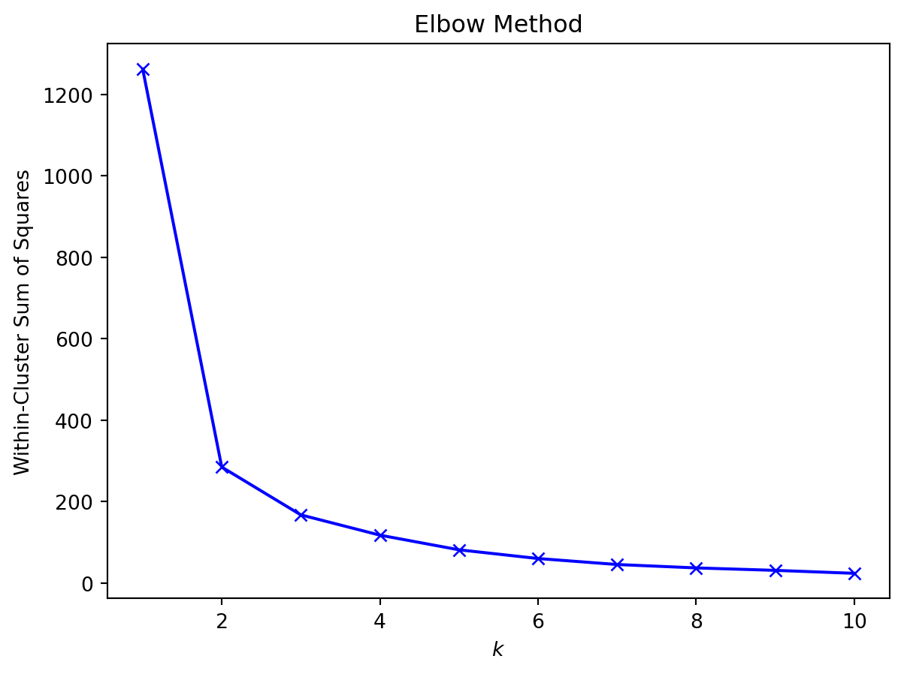

This is the second blog post in a series of posts for my class on machine learning at Virginia Tech. Here we will discuss clustering, a common technique in machine learning that involves the grouping of data points together. We’ll cover the underlying objectives of clustering and dive into one of the most popular clustering methods: k-means.
The Data
We’ve already introduced the dataset we’ll be using for this blog series in the previous blog. In case you didn’t read that one, however, here’s a quick summary.
The data was collected by Burn, the VT Men’s Ultimate Club. Ultimate, also known simply as frisbee, is a game that involves players trying to throw a disc between themselves with the goal of being in their team’s endzone with the disc, scoring them a point. Don’t worry too much about the intricacies of ultimate; the machine learning concepts should still make sense regardless.
I mentioned in my last blog that we’ll be using spinoffs of the initial dataset, which contained rows of throws from Burn’s offense at a recent tournament. That’s going to be the case in this blog. Burn has gone through the trouble of summarizing the data for each player on their team. We’ll be using this dataset for our clustering purposes.
Code
```{python}import numpy as npimport pandas as pddat = pd.read_csv("playDatSteelCity23.csv")dat = dat.drop(['Unnamed: 0'], axis=1)dat.head()```
Player
ActivePoss
ActivePossScored
ScorePerc
Touches
PickUp
CenterThrow
DumpThrow
SwingThrow
UpLineThrow
...
RecEPA
HanEPARes
HanEPA2
HanEPATurn
RecEPATurn
EPA
TourneyScore
TourneyGrade
EPAPerPoss
EPAPerTouch
0
AR
20
7
35.0
54
6
0
0
9
2
...
0.398
0.718
1.108
-0.420
0.000
1.248
1.00
A
0.062377
0.023103
1
AK
10
5
50.0
25
0
0
0
2
0
...
0.200
0.300
0.307
0.000
0.000
0.248
0.33
B
0.024833
0.009933
2
JL
41
15
36.6
115
2
0
3
21
6
...
1.843
0.956
-0.073
-2.074
-0.416
1.512
0.95
B
0.036869
0.013145
3
ZA
16
7
43.8
40
4
1
1
5
3
...
-0.101
0.415
0.589
-0.829
-0.209
0.230
0.59
B
0.014361
0.005744
4
CM
29
10
34.5
119
19
2
5
12
5
...
0.229
0.637
0.612
-1.915
0.000
0.583
0.16
C
0.020089
0.004896
5 rows × 92 columns
Clustering
Clustering is a technique in machine learning that involves grouping similar data points together based on their inherent characteristics. It is an unsupervised learning method, meaning it does not require labeled data for training. This is because we aren’t necessary trying to estimate or predict anything directly from clustering. Instead, we aim to discover patterns or structures within the data, enabling us to gain insights. Thus, we don’t need our data to have labels, or context.
Let’s consider a simple example. Say we have a group of different animal species and we want to create subgroups of the animals based on similarity. Some animals, like lions and tigers, are extremely similar and will likely get grouped together. Other animals, like whales and mice, are not similar at all and will likely not get grouped together. From these groupings, we can analyze for patterns. We might notice that fish are all grouped together, indicating they’re distinctly different type of animals then different animal classes. We might notice some exceptions, however, like dolphins (mammal) being grouped with sharks (fish). If this were a supervised learning method, we’d need information on the variables we’re trying to estimate. If we were trying to estimate an animal’s weight, for instance, we’d need data on animals and their weights to build the model in the first place. Since we’re not trying to estimate anything, however, we don’t absolutely need the animal’s weight to make these groups, though an important feature like that will certainly help.
While that example didn’t entail math, clustering ML certainly does. Let’s introduce the problem we’ll be using for the rest of this blog. As I mentioned, the data we’ll be using contains 26 rows of players on Burn. We’ll be creating clusters of these players based on the number of times they pick up the disc (to start a possession) and their average throw distance. Let’s plot the players using those two metrics:
Code
```{python}import matplotlib.pyplot as pltx1 = dat['PickUp']x2 = dat['AvgThrow']fig = plt.figure(figsize = (6, 3))ax = fig.add_subplot(111)plt.scatter(x1, x2, color ='tan', s =50, alpha =0.5)plt.xlabel("Pick Ups")plt.ylabel("Average Throw Distance")plt.title("Pick Ups versus Throw Distance")plt.show()```
Just from the eye test, you can likely see some clustering going on. The eye test is nice, but let’s try out a more objective method.
\(k\)-Means
One commonly used clustering method is k-means clustering. In this algorithm, the data is divided into \(k\) clusters, where \(k\) is a parameter we define ourselves. The goal of the algorithm is to minimize the distance between data points and the center of the cluster they’re assigned to (referred to as centroids). Here is the general structure for the algorithm:
Initialize: select \(k\) data points as the initial cluster centroids
Assign: appoint each of our data points to the cluster whose centroid they’re closest to
Update: recalculate the cluster centroids by taking the mean of all data points assigned to each cluster
Repeat: complete steps 2 and 3 until convergence
The algorithm is essentially entails updating the cluster of each data point and the centroid of each cluster until updating no longer change the results significantly or we get tired of it taking too long! These steps seem simple enough, but carrying it out will require further clarification. For instance, how do we decide on the value of \(k\)? How do we decide which centroid each data point is closest to?
Let’s start by answering the first question. Selecting \(k\), the number of clusters, is a little messy. Having to choose that value at the very beginning of the algorithm is one of its largest downsides. The goal is to find the optimal \(k\), one that minimizes the distance of data points within a cluster while maintaining the distance of between clusters. Choosing a too small \(k\) can result in forcing data points that aren’t close to be in the same cluster, while choosing a too large \(k\) can result in little insights gained, as clusters become more individualized to each data point. Ideally, we’d have domain knowledge that may indicate the optimal number of clusters. If we don’t, however, we’d likely have to turn to a selection technique, like the elbow method or silhouette analysis.
Elbow Method
The elbow method involves plotting the within-cluster sum of squares against different values of \(k\). The within-cluster sum of squares essentially represents the distance within the cluster between their data points, where smaller values mean the data points in the same clusters are closer together. We’d expect this value to decrease as we increase \(k\). After building this plot, we select the value where the decrease in the within-cluster sum of squares levels off. This is described as the “elbow” in the graph, as ideally the graph starts at a significant decline than suddenly flattens.
Code
```{python}from sklearn.cluster import KMeansX = np.array(list(zip(x1, x2))).reshape(len(x1), 2)K =range(1, 11)wcss = []for k in K: kmeans = KMeans(n_clusters = k, n_init =10, random_state =42) kmeans.fit(X) wcss.append(kmeans.inertia_)plt.plot(K, wcss, 'bx-')plt.xlabel('$k$')plt.ylabel('Within-Cluster Sum of Squares')plt.title('Elbow Method')plt.show()```

The elbow here is at \(k=2\), so we’d choose 2 as our value for \(k\) when running \(k\)-Means. That’s just one method, however. Let’s try another one.
Silhouette Analysis
Silhouette analysis calculates a measure of how well each data point fits into its assigned cluster, helping to assess the quality of the clustering. It does this by calculating the average silhouette coefficient across all data points. The silhouette coefficient ranges from -1 to 1, where values close to 1 indicate the respective data point is in a suitable cluster and values close to -1 indicate the data point is in the wrong cluster. By calculating the average silhouette coefficient for different values of \(k\), we can identify the value that maximizes the overall closeness within clusters and distance between clusters.
From using the elbow method, we can tell that the optimal value for \(k\) is likely 2. Let’s use silhouette analysis to compare \(k=2\) and \(k=3\) to get some more confirmation.
The results of the silhouette analysis confirm what we found with the elbow method. We’ll use \(k=2\).
Results
Now that we have our value for \(k\), let’s flesh out the rest of the \(k\)-Means algorithm. We’ll randomly select our initial centroids. This is a limitation of \(k\)-Means, as we could converge to a locally optimal result. Without any domain knowledge to guide us, however, it’s our easiest approach. We’ll also use Euclidean distance to define how close each data point is to the centroids. This is one of the more commonly used distance metrics.
It appears as though the separator between the two clusters is the number of times the players picked up the disc. In ultimate, there’s a set role for the players that pick up the disc: the handler. The machine learning we did helped us see the number of handlers on the team and, when we check their names, who the handlers are. Great work!
Conclusion
Hopefully you now understand the basics of clustering. Be sure to check out the next installment of this series, and have a great day!